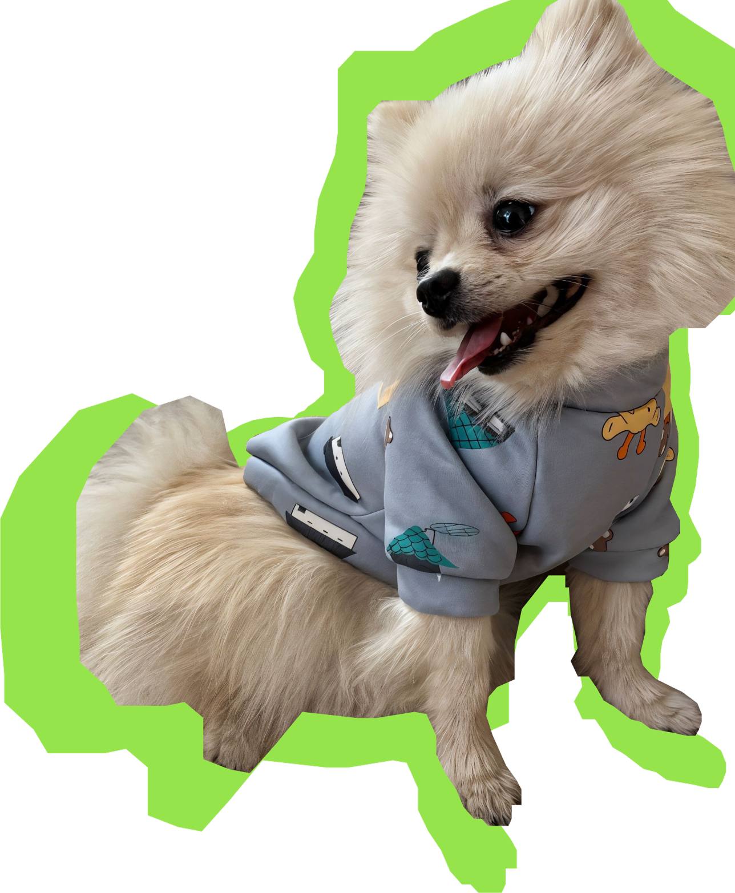

My mom took care of me for a long time,
picking out the right food and cleaning my ears
I was still scared to go outside
I wanted to meet other dogs, but I was so afraid that I kept tucking my tail and running away
My mom didn’t give up
She praised me whenever I stayed close to other dogs
Gradually, I realized that being near them wasn’t as scary as I thought!